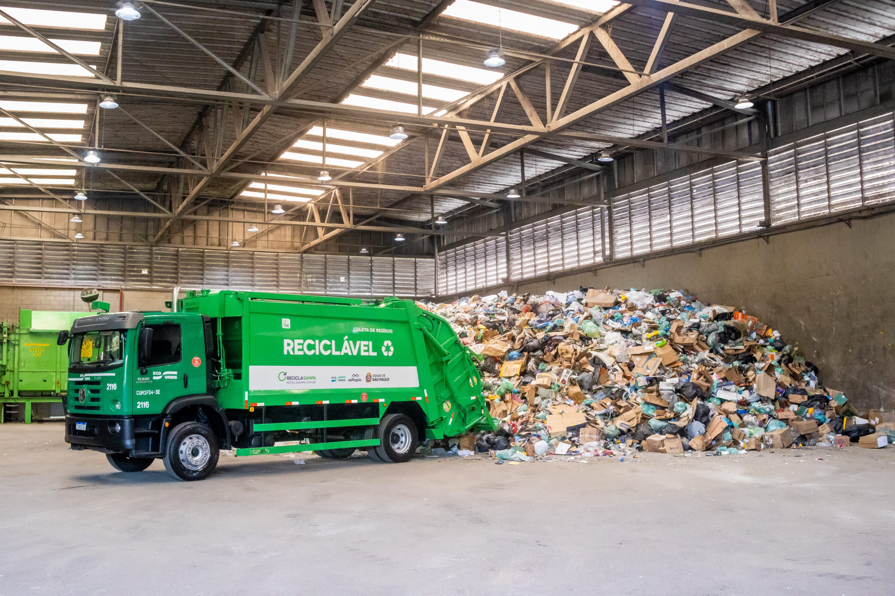
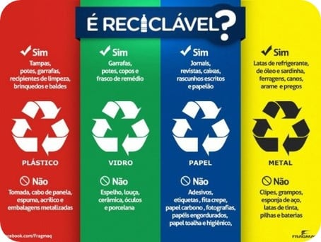
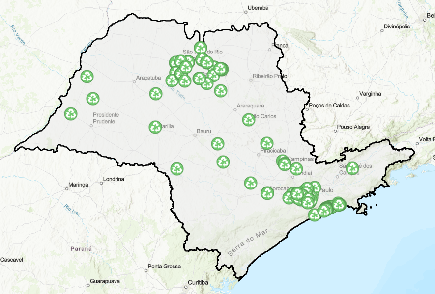

Sobre o Projeto
EcoAção é uma iniciativa que visa conscientizar sobre a importância da reciclagem e da coleta seletiva no estado de São Paulo.
Nosso objetivo é tornar o estado mais limpo e sustentável.
Dicas de Reciclagem
- Separe o lixo seco do orgânico.
- Lave as embalagens recicláveis antes de descartá-las.
- Use sacolas reutilizáveis sempre que possível.

Vídeo com dicas sobre reciclagem: COMO RECICLAR PLÁSTICO EM CASA - Manual do Mundo
Essas ações simples ajudam a reduzir o impacto ambiental.
Locais de Coleta
A Companhia Ambiental do Estado de São Paulo (CETESB) é a agência governamental responsável pela fiscalização da sujeira no estado de São Paulo. Abaixo alguns sites informativos que a agência disponibilizou:
Mais informaçõesConfira os principais pontos de coleta seletiva em sua cidade:
Mapa interativo
Ajude sua comunidade com ações sustentáveis.